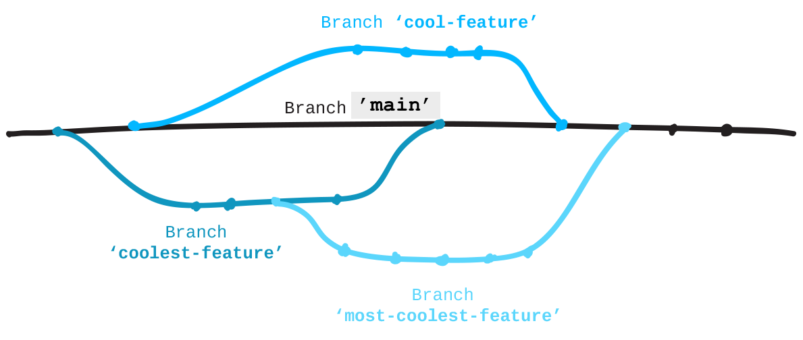

변경을 하기위해 로컬(local)에서 포크(fork)한 저장소(repository)에 브랜치(branch)를 추가하세요.
브랜치(branch)
Git 저장소는 필요할 때 작업을 분리하기 위해 브랜치를 이용합니다. 작업하고 있는 변경사항들을 유지하기위해 브랜치를 생성하는 것은 프로젝트에서 혼자 혹은 다른 사람들과 함께 일할 때 사용하는 일상적인 일입니다. 이러한 방법을 통해 보통 'master' 라는 이름의 주 브랜치를 안정적이게 유지하며 당신의 작업을 할 수 있습니다. 브랜치에서 하던 작업이 끝나면 'master' 브랜치에 이를 머지(mergy)합니다.
아래에 있는 다이어그램은 어떻게 'master' 브랜치로부터 브랜치를 따고, 작업하고, 'master'에 그 변경 사항들을 머지하는지 보여줍니다. 만약 필요하다면 'master' 브랜치가 아닌 다른 브랜치를 기준으로도 브랜치를 딸 수 있습니다.
프로젝트에서 브랜치 작업이 어떻게 이루어지는지에 대한 훌륭한 시각화를 이 GitHub Guide 에서 볼 수 있습니다: guides.github.com/introduction/flow/
GitHub Pages
GitHub는 이름이 'gh-pages' 인 브랜치에 있는 정적 웹사이트 파일들을 자동으로 제공/호스팅 해줍니다. 이 무료 서비스를 GitHub Pages 라고 부릅니다. 당신이 포크한 프로젝트는 웹사이트를 만든 것이여서, 주 브랜치가 'master' 대신 'gh-pages' 입니다. 웹사이트 파일들이 있는 'gh-pages' 브랜치를 가진 모든 저장소는 다음 패턴의 URL을 통해 온라인으로 접근할 수 있습니다:
http://유저이름.github.io/저장소이름
브랜치(branch) 생성하기
브랜치를 만들게 되면 Git이 현재 브랜치로부터 모든 것을 복사해서 당신이 생성한 브랜치로 옮기게 됩니다.
'patchwork' 저장소 안에서 git status 를 입력해 현재 브랜치가 무엇인지 확인하세요. Git은 당신이 'gh-pages' 브랜치에 있다고 답해줄 것입니다.
이제 새로운 브랜치를 만들고 "add-<유저이름>" 이라고 이름 붙일 것입니다. 예를 들면 "add-jlord" 같이요. 브랜치는 대소문자를 구분하기 때문에 당신의 브랜치 이름이 정확하게 당신의 GitHub 이름과 같아야 합니다.
git branch <브랜치이름>
이제 'gh-pages' 와 동일하지만 새로운 이름을 가진 브랜치를 가지게 되었습니다.
그 브랜치에 들어가 작업을 하기 위해서는 브랜치에 체크아웃(checkout) 을 해야합니다. 새 브랜치로 가봅시다:
git checkout <브랜치이름>
새 파일 생성하기
텍스트 에디터로 돌아가서:
- "add-<유저이름>.txt" 이라는 파일을 하나 생성하세요. "add-jlord.txt" 같이요.
- 그 다음 당신의 GitHub 유저이름을 그 안에 적으세요. 저는 'jlord' 라고 적었습니다.
- 이 파일을 Patchwork 의 'contributors' 폴더 안에 저장하세요: Patchwork/contributors/add-<유저이름>.txt
- 다음으로, 변경들을 체크인(check-in)하세요(아래를 참조하세요).
체크인
프로젝트에 체크인하기 위해 다음 단계를 따라해보세요:
git status
git add contributors/<파일이름>
git commit -m "<커밋 메시지>"
이제 GitHub 에 당신이 포크해온 'origin' 에 이 업데이트들을 푸시하세요:
git push origin <브랜치이름>
Permission denied...error: 403
지금 당신은 쓰기 권한이 없는 저장소에 변경들을 푸시하고 있습니다. 이 경우 아마 'jlord/patchwork' 원본 저장소일 것입니다. 당신이 'origin' 에 푸시하고 있고 그것이 GitHub 에서 포크해온 주소를 가리키고 있는지 확인해보세요. 당신의 리모트들과 그것들이 어디를 가리키고 있는지를 확인하기 위해서 git remote -v 를 실행하세요. 'upstream' 은 'jlord/patchwork' 를 가리키고 'origin' 은 '<유저이름>/patchwork' 을 가리켜야 합니다.
URL 을 수정해서 잘못된 곳을 가리키고 있는 리모트를 고칠 수 있습니다: git remote set-url origin <당신포크의URL>.
File NOT in contributors folder
당신이 생성한 파일은 Patchwork 저장소에 존재하던 'contributors' 폴더 안에 위치해야 합니다. 만약 이것을 다른 곳에 두었다면 간단히 파인더(Finder) 나 탐색기(Explorer) 를 이용해서 그 폴더로 이동시켜주세요. git status 로 다시 체크하면 변경 사항들이 보일 것입니다. 스테이징하고(Stage) 이 변경들 "모두(all)" (-A) 를 아래 커맨드를 통해 커밋하세요.
git add -A
git commit -m "move file into contributors folder"
Branch name expected: _____
브랜치 이름의 유저이름 부분은 당신의 유저이름과 똑같아야 합니다. 브랜치 이름 수정하기:
git branch -m <새브랜치이름>
수정했으면 다시 한 번 확인해보세요!
- 브랜치를 생성하고 그 브랜치로 변경하는 것을 한 줄로 할 수 있습니다
git checkout -b <브랜치이름>- 새 브랜치 생성하기
git branch <브랜치이름>- 브랜치로 이동하기
git checkout <브랜치이름>- 브랜치 리스트 보기
git branch- 현재 브랜치 이름 변경하기
git branch -m <새브랜치이름>- 작업하고 있는 브랜치 확인하기
git status